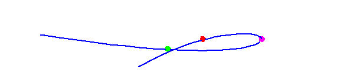

Back:
The Rational Normal Curve
Up:
The Shapiro Conjecture
Next:
Three Lines Tangent to the Rational Normal Curve
Three Points on the Rational Normal Curve
Begin with a rational normal curve in 3-space, and select three points on
it:

There are two animations of sizes
204 KB and
333 KB.
Last Modified Saturday 20 September 2003
by Frank Sottile